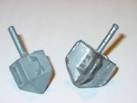
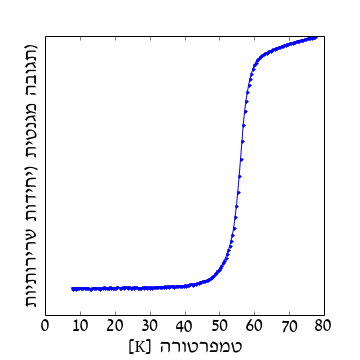
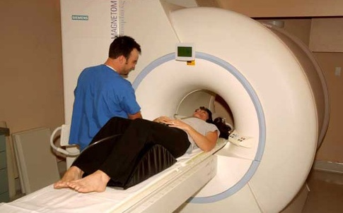

על-מוליכים
וחיות אחרות?
מרצה: רונן אברבנאל
פסטיבל איקון 2015 - הרפתקאות
אוקטובר 2015
בחזרה לעתיד
אוגוסט 2015
העולם האמיתי
על מוליכים?

על מה נדבר?
רקע
על מוליכות
שימושים
במדע בדיוני
הולכה חשמלית
הולכה חשמלית
מבנה האטום
- גרעין - פרוטונים וניוטרונים. טעון חיובית
- אלקטרונים טעונים שלילית
אטומים במתכת

אלקטרונים חופשיים - בשדה חשמלי

אטומים במתכת - בשדה חשמלי

התנגדות חשמלית
התנגדות חשמלית - למה זה טוב?

התנגדות חשמלית - למה זה רע?

התנגדות חשמלית
אז אולי אפשר בלי?
אבל לפני זה...
נדבר על
מגנטים
שדות מגנטיים
נוצרים על ידי
שדות מגנטיים
נוצרים על ידי
שדות מגנטיים
נוצרים על ידי
שדות מגנטיים
משפיעים על
על-מוליכות

ללא התנגדות חשמלית
אפקט מייזנר
על מוליך מונע חדירה של שדה מגנטי
על מוליך
בתנאים מסויימים...
התנגדות חשמלית - אפס
דוחה שדה מגנטי
ריחוף!
חומרים על מוליכים
"קלאסיים"

ההיסטוריה של על מוליכות
- 1935 משוואת לונדון
- 1950 לנדאו-גינצבורג
- 1957 BCS - ברדין, קופר ושריפר
- 1986 על מוליכים בטמפרטורות גבוהות
חומרים על מוליכים
בטמפרטורות גבוהות

שימושים לעל מוליכים
בימנו...
(אלקטרו) מגנטים חזקים
שימושים לעל מוליכים - MRI
שימושים לעל מוליכים - מאיצי חלקיקים
שימושים לעל מוליכים - מאיצי חלקיקים
שימושים לעל מוליכים - ריחוף מגנטי

שימושים לעל מוליכים - ריחוף מגנטי

בעתיד?
או לפחות, כשיהיו לנו על-מוליכים בטמפרטורת החדר...
ובמדע בדיוני
על מוליכים זה מגניב.
שאלות פתוחות
- מה המנגנון שמפעיל על מוליכים בטמפרטורות גבוהות?
- איך בונים על מוליכים בטמפרטורת החדר?
- זה בכלל אפשרי?
עולם חדש ומופלא
שאלות?
על מוליכות
אבל למה זה עובד?
בוזונים ופרמיונים
ספין - תכונה יסודית של חלקיקים. מספר שלם או חצי שלם
אפשר לחבר ספינים!
- בוזונים - חלקיקים עם ספין שלם.
פוטונים
- פרמיונים - חלקיקים עם ספין חצי-שלם
אלקטרונים, ניוטרונים.

בוזונים ופרמיונים - דוגמאות
הליום 3 והליום 4
אם היו לנו זוגות של אלקטרונים, אז כל זוג כזה היה בוזון!